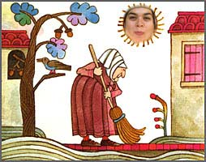
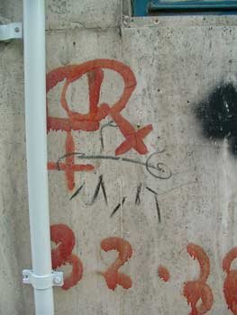

|
سیمون دوبوار هم درباره جنس سه و یک دوم صحبت کرد. زنان در برابر خفگی در چاه هم موضوع سخنرانی قره العین بود. ویرجینا وولف هم که در دقائق آخر خودش را به کارناوال رسانده بود به طور مفصل درباره رهن و اجاره اتاق برای زنان بی خانمان صحبت کرد. تصور ما زن هاي ازاديخواه اين بود كه...: مصاحبه "شايد" شهرنوش پارسي پور با طوبي آزمودهش. سلام خانم آزموده، چقدر خوشحالم كه پيداتان كردم. يك مصاحبه براي 8 مارس مي خواهم. ط. 8 مارس؟ ش. بله، روز جهاني زن. حالا يك روز جهاني داريم. ط. فرقي هم در شرايط زندگي زنان ايجاد كرده؟ ش. خانم آزموده، گفتم من مي خواهم با شما مصاحبه كنم نه شما با من. ط. خب. بفرماييد. اما بعد برايم مفصل تعريف كن كه ماجراي اين روز جهاني زن چيست. ش. بسيار خوب. به تلاش هاي شما براي تاسيس اولين مدرسه دخترانه در ايران (تهران-ناموس، 1286 ش.) فكر مي كنم به اين نتيجه مي رسم كه كار شما معجزه بود. ازطاقت بيشتر زن ها به دور بود. چطور 100 سال پيش به فكرتان رسيد مدرسه براي دخترها بازكنيد؟ ط. با صدور فرمان مشروطه تصور ما زن هاي آزادي خواه اين بود كه ديگر رعيت كه نه بلكه از قاطبه اهالي ايران و از اجزاء ملت به شمار مي آييم و رفاه و امنيت مان رسما واجب شده است و وسيله حصولش هم تحصيل علم است. ثانيا چرا صد سال پيش، يا حتي دويست سال پيش، نبايد به فكر ما مي رسيد كه مدرسه براي دخترها باز كنيم؟ ش. خانم آزموده لطفا اول جواب سؤالات را بدهيد و بعد كه نوبت شما شد هر سؤالي كه داشتيد با كمال ميل جواب مي دهم، لااقل اگر در مورد نسل خودم باشد. در ضمن...حق با شماست، سؤال دومم به اعتباري احمقانه است! معلوم است كه اگر شما صد سال پيش مدرسه باز كرديد يعني ضرورت، امكان و وقت اين كار بوده.
ط. اگر بحث ضرورت و امكان و وقت باشد بايد بگويم كه احمقانه نيست. يعني اگر
منظور مخالفت ها و فشارهايي باشد كه براي اين مدرسه پيش آمد. من كه به فكر تاسيس
مدرسه دخترانه افتادم همزمان با آن دچار اين خبط ناخواسته شدم كه عده اي را كه عقل
شان هم به اين چيزها نمي رسيد به فكر جلوگيري از تاسيس مدرسه دخترانه بيندازم.
طبيعي است كه اگر من از فكر تاسيس مدرسه دخترانه منصرف مي شدم، آن عده هم از فكر
جلوگيري از تاسيس مدرسه دخترانه منصرف مي شدند. اما نه من منصرف شدم و نه آن ها.
حاصل اين دو نيروي متضاد سواد پيدا كردن عده هاي با قابليت بود و جفنگ به هم بافتن
عده اي بي قابليت. حالا آن حرف هاي ركيك شده هجويه، اما از من مي شنوي باور نكن. آن
قدر مزخرف و مستهجن بودند كه...
ش. فكر مي كنيد به خاطر اين طبع استثنايي است كه... ط. شايد، اما مطمئن نيستم. جهل البته خيلي كارها مي كند. اما هيچ كس هم جاهل مادر زاد نيست. فكر مي كنم همه چيز بستگي به اين دارد كه چطور شخص را متقاعد كنند دانشي كه دارد به هيچ دردي نمي خورد و منسوخ است يا شرايطي را براي ابطال اين دانش به وجود آورند. الغرض، دانش را به جهالت تبديل كردن عملي غير ممكن نيست، مثل داستان سوسيس و گاو كه در دوران ما از لطايف فرنگ رفته ها بود. حالا ديگر نوبت من است كه سؤال كنم. ش. نه خانم آزموده، اجازه بفرماييد من سؤال هايم را تمام كنم. اين داستان سوسيس و گاو را من هم شنيده ام. حالا بفرماييد چطور شاگرد پيدا كرديد. چطور بدون سابقه قبلي توانستيد خانواده ها را متقاعد كنيد؟ چند روز پيش شخصي را ديدم كه هم امتياز تاسيس مدرسه داشت و هم امتياز تاسيس دانشگاه. مي گفت مدرسه اش را قبلا امتحان كرده و بعد پشيمان شده و بسته و آمده خارج. حالا مي خواهد برگردد و دانشگاه باز كند. او مي گفت كه دانشگاه باز كردن راحت تر است چون دردسر مراجعه پدر و مادر و ايرادهاي بهزيستي و گير آموزش و پرورش را ندارد، راحت! خب، با اين تفصيل فكر كنم در آن دوره هم مثلا اگر دانشگاه باز مي كرديد راحت تر از مدرسه بود. ط. منظورت اين است كه اعتماد از ميان مردم به كلي رخت بربسته و جايز هم نيست؟ اما در دوران ما شاگرد پيدا كردن و مدرسه اداره كردن كار سختي نبود. در ضمن، چه كسي گفته كه سابقه اش نبود؟ پس من خودم چطوري سواد دار شده بودم؟ و نسل هاي قبلي؟ شاعرها، خوشنويس ها؟ ش. گويا همه تان دستي هم در هنر داشتيد. در سرگذشت نورالهدي منگنه آمده كه اولين نمايشنامه براي زنان در اسال 1303 در خانه ايشان اجرا شد. آيا شما هم شركت داشتيد؟ ط. بله. خوب يادم هست كه روز بسيار دلنشيني بود، آسمان صاف و درخشان بود. باغ خانم منگنه از خانه ما خيلي فاصله نداشت. صبح خيلي شاد راه افتادم و شب خيلي غمگين برگشتم خانه. ش. نه خانم آزموده. از اتفاقات آن روز واقعا متاسفم از جمله به اين دليل كه همچنان تكرار مي شوند. اين از آن روزهايي است كه مي بايست به صد دليل يادش را زنده نگه مي داشتيم و برايش سالگرد مي گرفتيم. يك مراسم درست و حسابي. ط. مثل 8 مارس؟ ش. نه خانم آزموده! اين يكي را نمي توان در ايران برگزار كرد. ط. چرا؟ ش. هنوز نوبت سؤال كردن شما نشده. لطفا مي توانيد بگوييد چرا نمايش آدم و حوا انتخاب شده بود؟ براي اين مي پرسم كه خودم هم به دلايلي– در طوبي و معناي شب – از آدم و حوا صحبت كرده ام. فكر مي كنيد اين تداوم دليل دارد؟ ط. هيچ چيزي بي دليل نيست، منتها گاهي مسائل ساده و مستقيم به هم ربط ندارند، شايد انتخاب آن زمان جمعيت نسوان وطنخواه، خانم محترم اسكندري، خانم نورالهدي منگنه و خانم وارتو طريان ربطي به انتخاب هاي بعدي نداشته باشد. بايد ديد كه افسانه آدم و حوا در آن موقع چه امكاناتي براي روي صحنه بردن داشته. اين افسانه خيلي قديمي است و آدم اول زن ديگري داشته به نام ليليت؛ اين ليليت زن مستقلي است و اگر سيب را او مي خورد احتمالش شايد صد در صد نبود كه اول نظر مساعد شوهرش را جلب كند و بعد بخورد! ش. شما كه گويا بدون نظر مساعد شوهرتان كاري نمي كرديد چرا اين حرف را مي زنيد؟ ط. جان من بايد با اين جور چيزها كمي با طنز برخورد كرد. زنان مملكت من ديگر طبع شوخي ندارند؟ ش. خانم آزموده هنوز نوبت سؤال به شما نرسيده. اما فرض كنيد كه ماها ديگر طبع شوخي نداريم و معني كلمات نه اين كه كاملا از دست رفته باشد اما يك جوري گم و گور شده. مي دانم نظر مساعد شخصي را جلب كردن صد جور معني دارد اما فرض كنيد اين معناها دارند مي روند و وسط راه به هم گره مي خورند و قاطي مي شوند: يك گره كور. منظورم را مي فهميد؟ ط. البته، البته! ش. داستان آدم و ليليت تان نصفه كاره ماند. به اين جا رسيديد كه ممكن بود ليليت ميوه بهشتي را تنهايي بخورد و آدم را هم خبر نكند و آدم بي معرفت بماند. اوا! ط. چطور شد؟
ش. چيز مهمي نيست. به فكرم رسيد كه ممكن----> |
.....فكرمرسيد كه ممكن است آدم ميوه را گاز زده و بعد تف كرده باشد؟ مردها سليقه هاي غذايي عجيبي دارند! ط. بعيد نيست. به هر حال ليليت به دليل سركشي از اين قصه خذف شد و جايش را حوا گرفت كه در نقش قبلي ثابت شده بود سر به راه است. داستان اين يكي را خوب مي دانيد. ش. بله، همه مي دانند كه حوا خداي مؤنث نگهبان دنده مرد بوده. نگهبان خوبي هم بوده. خب، با اين حساب نمي فهمم چرا به محل اجراي نمايش آدم و حواي جمعيت نسوان وطنخواه حمله شد؟ ط. آن روزها زن ها حق نداشتند تئاتر تماشا كنند. ش. بله مي دانم، ممكن بود فكرهايي به سرشان بزند. ط. مثلا چه فكري؟ ش. اتفاقا براي چنين سؤالي جواب هاي دقيقي دارم. اما شما بگوييد چرا نمي توانستند تئاتر بروند. ط. خيلي ساده: حق نداشتند! مگر شما مي توانيد به تماشاي مسابقه فوتبال برويد؟ اين كارها را براي زن ها بد مي دانستند. ش. براي خود مردها بد نيست، براي زن ها بد است! قانوني هم براي اين ممنوعيت وجود داشت؟ ط. مسلم است كه نه! تازه مگر قانوني كردنش كاري داشت؟ ش. شما هم انگار عادت داريد سؤال را با سؤال جواب بدهيد! چه كساني به تئاتر حمله كردند؟ ط. اين يكي را تو بايد به من بگويي. حداقل مي دانم كه در مورد گروه هاي آشوبگر يا فشار و نحوه عمل شان ديگر به قدر كافي نوشته و تحقيق و تجربه موجود است و به دست شما هم مي رسد كه مثنوي هفتاد من كاغذ مي شود. اين مثل سرطان است، آيا شما با همه پيشرفت هاي طب موفق شده ايد براي اين دردها درماني پيدا كنيد؟ ش.نه نتوانسته ايم. طول عمرها زياد شده. مرگ و مير در اثر بيماري كم شده، اما بيماري هاي قبلي هنوز راه درمان نيافته امراضي جديد و درمان ناپذير اضافه شده. بعضي امراض كه در دوره شما اسم نداشتند و معمولا مي گفتند فلاني را چشم زدند يا دق كرد، حالا اسم پيدا كرده اند، اما نه همه امراض. چشم زدن ها هم سياسي شده. براي من جالب است بدانم آيا در دوره شما هم همين طور بود؟ يعني شخص متفكر و داراي شنونده براي افكارش، تو چشم بود و با مشكل چشم زخم در شكل هاي مختلف توقيف و حبس ابد رو به رو مي شد؟ يا چشم زدن مراحل و منازل ديگري داشت؟ ط. شماها بدجنس شده ايد. زن هاي زمان ما بدجنس نبودند. ببين چطور موضوع را مي كشاني به امراض اجتماعي بدون اين كه روشن سؤال كني؟ اين هم طرز مصاحبه شد! ش. بدجنسي نمي كنم، سعي مي كنم خودم را سانسور كنم اما نمي شود. نسل من اين هنرها را ياد نگرفته يا بهتر است بگويم فراموش كرده، از ذهن زدوده، چون يك دوره به نسبت راحت تر را از حيث روابط خانوادگي گذرانده. در دوران كودكي من شخصيت داشتن بچه ها كشف شد و ما در محيط امن تري بزرگ شديم و لازم نبود پنهان كاري كنيم. سرنوشت البته چيز ديگري را رقم زد. ط. به هر حال از بد جنسي ات بدم نمي آيد. گذشته از ربطي كه امراض شخصي و اجتماعي به هم دارند، خصوصيات مشتركي هم دارند. هيچ بعيد نيست كه قبلي ها را معالجه نكرده گرفتار بعدي ها شوي. اما فقط امراض اين طور نيستند، هنرها و ابتكارات هم هستند كه بي خبر و يكي بعد از ديگري مي رسند و اگر سعي نكنيم از آن ها عقب مي مانيم. براي همين تئاتر رفتن زن ها آن موقع براي ما مهم بود و شايد براي همين باهاش مخالفت مي شد. خيلي از زن ها به معني واقعي كلمه هزار هنر از هر انگشت شان مي ريخت اما بايد با هنرهاي ديگر هم آشنا مي شدند. ما يك جامعه زنان فعال و مستحكم مي خواستيم. اما ببين چطور شد! ش. به نظر شما چطور شد؟ ط. از من مي پرسي؟ فكر مي كنم حالا ديگر نوبت من است كه سؤال كنم.  |
 لطفن در سایت گم شوید
لطفن در سایت گم شوید 

{kind=link}